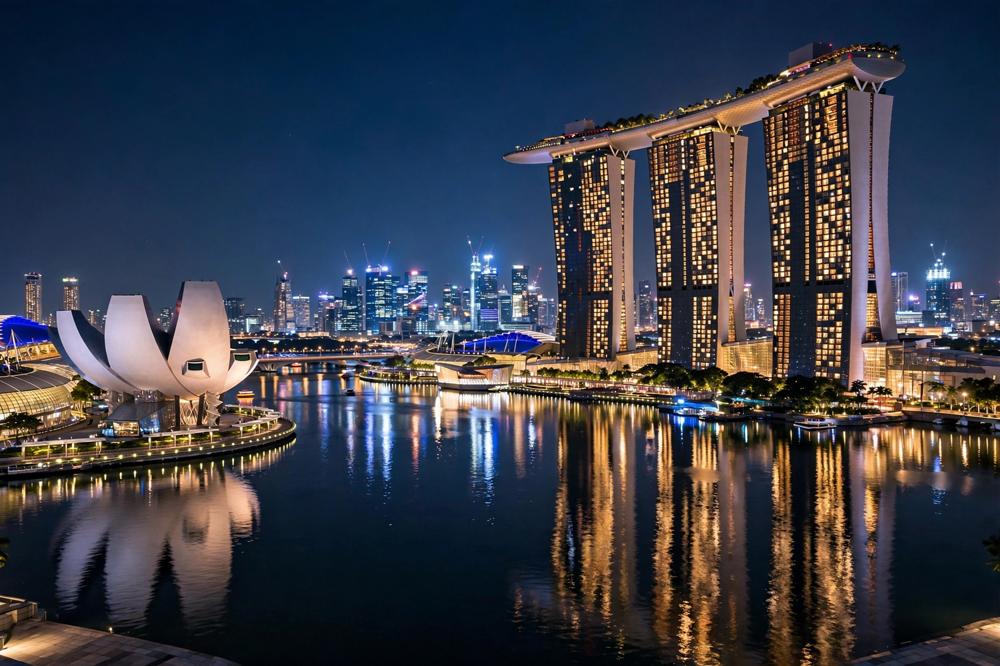

Singapore
| Singapore | |
|---|---|
| Type | Island city-state in Southeast Asia |
| Population | About 6 million (mid-2020s, including non-residents) |
| Official languages | English, Malay, Mandarin, Tamil |
| Independence | 9 August 1965 (separation from Malaysia) |
| Known for | World's busiest transshipment port (by most measures), global finance hub |
Singapore, officially the Republic of Singapore, is an island country and city-state in maritime Southeast Asia, lying just north of the equator off the southern tip of the Malay Peninsula. It consists of one main island and dozens of smaller islands, with a land area of roughly 730 km² expanded steadily by land reclamation. Despite its small size, Singapore is one of the world's wealthiest countries per capita, a leading global financial centre, and home to one of the world's busiest ports at the junction of the Strait of Malacca and the South China Sea.

History
A trading settlement existed on the island from at least the 14th century (Temasek), but modern Singapore dates from 1819, when Stamford Raffles of the British East India Company founded a free port. It became a crown colony, grew rich on rubber and tin trade through the Strait of Malacca, and suffered Japanese occupation (1942–45) after the shock fall of the "fortress" in February 1942. Self-government came in 1959 under Lee Kuan Yew; Singapore joined Malaysia in 1963 and was expelled in 1965, becoming an independent republic. Lee's People's Action Party governed for decades, pursuing export-led industrialisation, public housing (in which most citizens live), and strict social order, transforming Singapore from third world to first within a generation.
Economy and society
Singapore's economy centres on trade, shipping, finance, refining, electronics and biomedical manufacturing, with famously low corruption and an AAA-rated government. Its population of about six million is ethnically Chinese (majority), Malay, Indian and other communities, with four official languages and English as the working language. Landmarks include Marina Bay Sands, the Gardens by the Bay, and Changi Airport, frequently voted the world's best. The city-state is also known for strict laws — heavy fines for littering and vandalism, and the death penalty for drug trafficking — that spark ongoing debate about its balance of order and liberty.